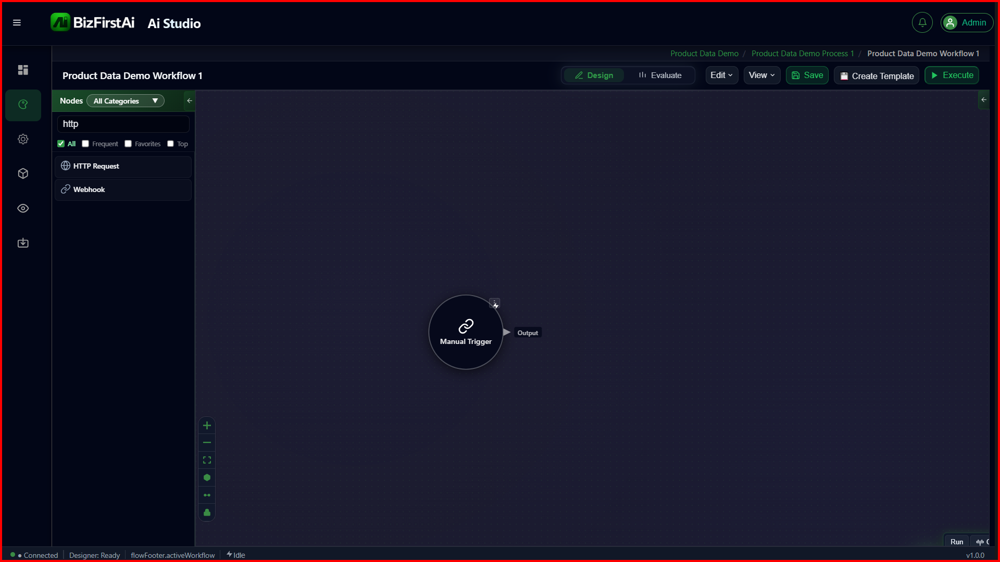
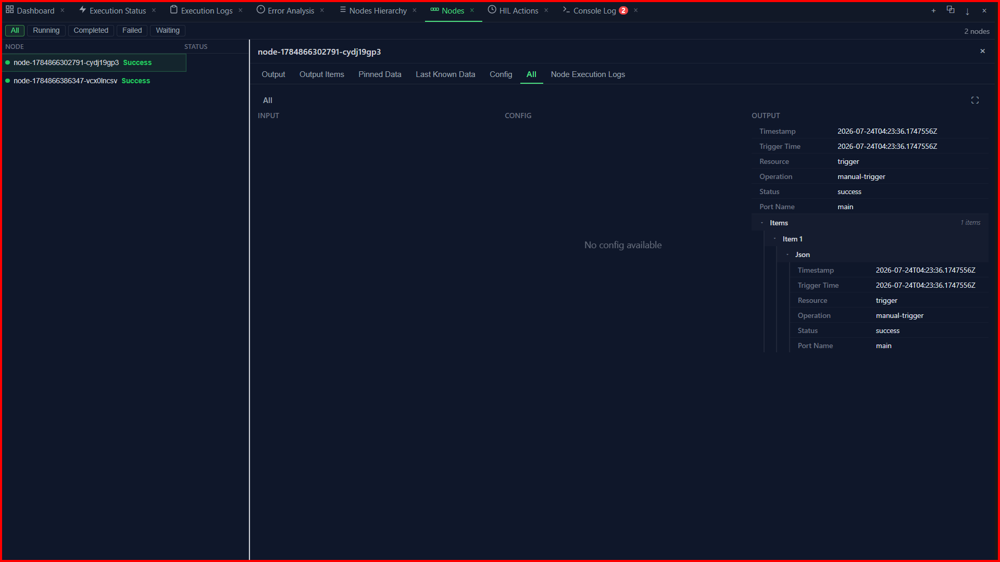

Step 1
Manual Trigger
The entry point of the workflow. No configuration — search the node palette, drag it onto the canvas, and it's ready.

Configuration
None. This is confirmed directly from a test run — the node's Config tab in the Evaluate panel reads "No config available".
Output
Every trigger produces the standard node envelope. This is the real output captured from a test run of this exact node:
{
"timestamp": "2026-07-24T04:23:36.1747556Z",
"triggerTime": "2026-07-24T04:23:36.1747556Z",
"resource": "trigger",
"operation": "manual-trigger",
"status": "success",
"portName": "main",
"items": [
{
"json": {
"timestamp": "2026-07-24T04:23:36.1747556Z",
"triggerTime": "2026-07-24T04:23:36.1747556Z",
"resource": "trigger",
"operation": "manual-trigger",
"status": "success",
"portName": "main"
}
}
]
}
Why this matters
This output becomes the input of the next node (HTTP Request). Nothing in this workflow reads from it directly, but it establishes the standard envelope shape —
timestamp / resource / operation / status / portName / items[].json — that every node in Flow Studio produces.